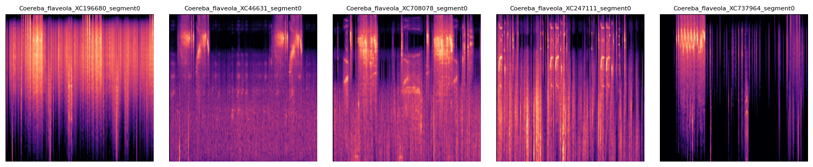

Generación de espectrogramas#
Librerías y módulos necesarios#
import pandas as pd
import librosa
import librosa.display
import matplotlib.pyplot as plt
import numpy as np
import os
from tqdm import tqdm
import pywt
from scipy.signal import butter, lfilter
import gc
import shutil
import random
import matplotlib.image as mpimg
Funciones y generación de imágenes#
# --- Configuración ---
csv_merged = 'datos/dataaveslimpia.csv'
carpeta_train = 'train_audio'
carpeta_aves = 'audios_aves'
carpeta_salida = 'espectrogramas_mel_final_TOP10'
respaldo = 'audios_no_encontrados'
SAMPLE_RATE = 32000
SEGMENT_LENGTH_SEC = 10
SEGMENT_SAMPLES = int(SEGMENT_LENGTH_SEC * SAMPLE_RATE)
os.makedirs(carpeta_salida, exist_ok=True)
os.makedirs(respaldo, exist_ok=True)
# Esto reduce el consumo de memoria al evitar la inicialización repetida de Matplotlib.
fig, ax = plt.subplots(figsize=(3, 3))
plt.axis('off')
fig.tight_layout(pad=0)
ax.set_facecolor('none')
# --- Funciones ---
def butter_bandpass_filter(data, lowcut, highcut, sr, order=5):
data = data.astype(np.float32)
if not np.isfinite(data).all() or len(data) == 0:
return None
nyq = 0.5 * sr
low = lowcut / nyq
high = highcut / nyq
b, a = butter(order, [low, high], btype='band')
y = lfilter(b, a, data)
return y.astype(np.float32)
def wavelet_denoising(y, wavelet='db4', level=1):
y = y.astype(np.float32)
if np.sum(np.square(y)) < 1e-10 or not np.isfinite(y).all():
return y
try:
coeff = pywt.wavedec(y, wavelet, mode="per")
if level > len(coeff) - 1 or level < 0 or len(coeff[-level]) == 0:
return y
sigma = (1/0.6745) * np.median(np.abs(coeff[-level]))
if sigma <= 1e-6 or not np.isfinite(sigma):
return y
uthresh = sigma * np.sqrt(2 * np.log(len(y)))
coeff[1:] = [pywt.threshold(i, value=uthresh, mode='soft') for i in coeff[1:]]
reconstructed = pywt.waverec(coeff, wavelet, mode="per").astype(np.float32)
if not np.isfinite(reconstructed).all():
return y
return reconstructed
except Exception:
return y
def generar_espectrograma_mel(y, sr, ruta_salida, fig, ax):
try:
S = librosa.feature.melspectrogram(
y=y, sr=sr, n_mels=128, fmin=500, fmax=15000,
n_fft=2048, hop_length=512
)
S_db = librosa.power_to_db(S, ref=np.max)
if not np.isfinite(S_db).all():
print(f"[ADVERTENCIA] Espectrograma inválido: {os.path.basename(ruta_salida)}")
return
librosa.display.specshow(S_db, sr=sr, x_axis='time', y_axis='mel', cmap='magma', ax=ax)
fig.savefig(ruta_salida, bbox_inches=None, pad_inches=0)
finally:
ax.clear()
# --- Construir lista de archivos disponibles ---
archivos_train = []
for root, _, files in os.walk(carpeta_train):
for f in files:
archivos_train.append(os.path.join(root, f))
archivos_aves = [os.path.join(carpeta_aves, f) for f in os.listdir(carpeta_aves)]
# --- Leer CSV y aplicar filtro de las 10 especies ---
df_original = pd.read_csv(csv_merged)
print("Filtrando el dataset a las 10 especies con más audios...")
especies_counts = df_original['scientific_name'].value_counts()
top_10_especies = especies_counts.head(10).index.tolist()
df = df_original[df_original['scientific_name'].isin(top_10_especies)].copy()
print(f"✅ Dataset reducido. Total audios a procesar: {len(df)} (Original: {len(df_original)})")
df['solo_nombre'] = df['filename'].apply(lambda x: os.path.basename(str(x)))
archivos_csv = set(df['solo_nombre'])
# --- Loop principal para generar espectrogramas ---
metadata_espectrogramas = []
archivos_png_existentes = set(f for f in os.listdir(carpeta_salida) if f.endswith('.png'))
print(f"Encontrados {len(archivos_png_existentes)} espectrogramas previamente generados en la carpeta TOP10.")
for _, row in tqdm(df.iterrows(), total=len(df)):
archivo_csv = os.path.basename(row['filename'])
nombre_cientifico = str(row.get('scientific_name', 'desconocido')).replace(" ", "_")
base_nombre_esperado = f"{nombre_cientifico}_{archivo_csv.replace('.ogg','').replace('.wav','')}"
ruta_audio = None
coincidencias_train = [f for f in archivos_train if os.path.basename(f) == archivo_csv]
if coincidencias_train:
ruta_audio = coincidencias_train[0]
elif archivo_csv in [os.path.basename(f) for f in archivos_aves]:
ruta_audio = os.path.join(carpeta_aves, archivo_csv)
else:
continue
try:
sr_original = librosa.get_samplerate(path=ruta_audio)
frame_length_original = int(SEGMENT_LENGTH_SEC * sr_original)
hop_length_original = int(frame_length_original * 0.5)
stream = librosa.stream(
ruta_audio,
block_length=256,
frame_length=frame_length_original,
hop_length=hop_length_original
)
segment_count = 0
total_segments = 0
try:
duration = librosa.get_duration(path=ruta_audio)
total_segments = int(duration / (SEGMENT_LENGTH_SEC * 0.5))
except Exception:
pass
for y_block in stream:
nombre_img_completo = f"{base_nombre_esperado}_segment{segment_count}.png"
ruta_img = os.path.join(carpeta_salida, nombre_img_completo)
if os.path.exists(ruta_img):
metadata_espectrogramas.append({'filename': nombre_img_completo, 'status': 'segmento_omitido'})
segment_count += 1
continue
y_resampled = librosa.resample(y=y_block.astype(np.float32), orig_sr=sr_original, target_sr=SAMPLE_RATE)
if len(y_resampled) < SEGMENT_SAMPLES:
y_resampled = np.pad(y_resampled, (0, SEGMENT_SAMPLES - len(y_resampled)), 'constant')
else:
y_resampled = y_resampled[:SEGMENT_SAMPLES]
y_filtered = butter_bandpass_filter(y_resampled, lowcut=500, highcut=15000, sr=SAMPLE_RATE, order=5)
if y_filtered is None:
segment_count += 1
continue
y_denoised = wavelet_denoising(y_filtered)
y_denoised = y_denoised / (np.max(np.abs(y_denoised)) + 1e-6)
energia = np.sum(np.square(y_denoised))
if energia < 0.001:
segment_count += 1
continue
generar_espectrograma_mel(y_denoised, SAMPLE_RATE, ruta_img, fig, ax)
metadata_espectrogramas.append({
'filename': nombre_img_completo,
'scientific_name': row.get('scientific_name', ''),
'original_file': archivo_csv,
'segment_index': segment_count,
'status': 'ok'
})
segment_count += 1
except Exception as e:
print(f"❌ Error CRÍTICO procesando {archivo_csv}: {e}")
continue
gc.collect()
plt.close(fig)
df_metadata = pd.DataFrame(metadata_espectrogramas)
df_metadata.to_csv('metadata_espectrogramas_final_TOP10.csv', index=False)
print("✅ Proceso finalizado. Espectrogramas guardados en:", carpeta_salida)
Filtrando el dataset a las 10 especies con más audios...
✅ Dataset reducido. Total audios a procesar: 6847 (Original: 32172)
Encontrados 3511 espectrogramas previamente generados en la carpeta TOP10.
51%|█████▏ | 3516/6847 [04:20<06:32, 8.49it/s]/home/sara/miniconda3/envs/tf_gpu/lib/python3.12/site-packages/pywt/_thresholding.py:22: RuntimeWarning: overflow encountered in divide
thresholded = (1 - value/magnitude)
100%|██████████| 6847/6847 [13:15<00:00, 8.60it/s]
✅ Proceso finalizado. Espectrogramas guardados en: espectrogramas_mel_final_TOP10
def visualizar_espectrogramas_por_especie(nombre_cientifico, carpeta='espectrogramas_mel_final_TOP10', max_mostrar=5):
nombre_cientifico = nombre_cientifico.replace(' ', '_')
archivos = [f for f in os.listdir(carpeta) if f.startswith(nombre_cientifico) and f.endswith('.png')]
total = len(archivos)
print(f'Se encontraron {total} espectrogramas para {nombre_cientifico.replace("_", " ")}')
a_mostrar = random.sample(archivos, min(max_mostrar, total))
fig, axs = plt.subplots(1, len(a_mostrar), figsize=(3 * len(a_mostrar), 3))
if len(a_mostrar) == 1:
axs = [axs]
for ax, archivo in zip(axs, a_mostrar):
ruta = os.path.join(carpeta, archivo)
img = mpimg.imread(ruta)
ax.imshow(img)
ax.axis('off')
ax.set_title(archivo.split('.')[0], fontsize=8)
plt.tight_layout()
plt.show()
visualizar_espectrogramas_por_especie('Coereba flaveola')
Se encontraron 630 espectrogramas para Coereba flaveola
